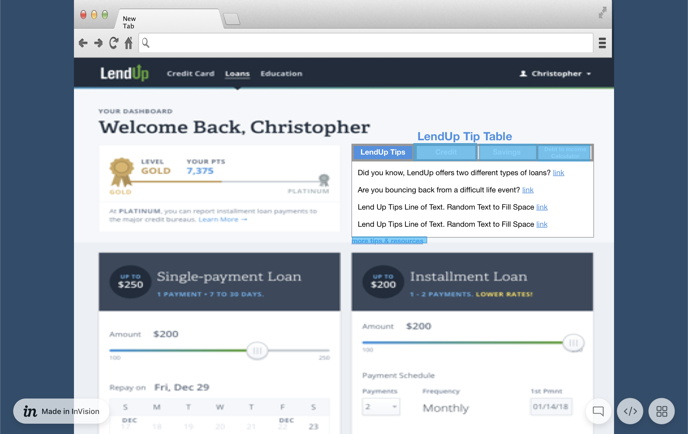
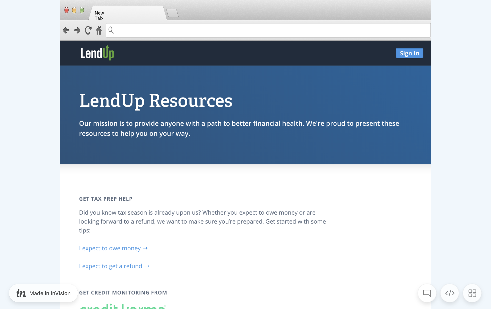

2018 Hackathon: LendUp - September 2018
For the 2018 Hackathon at LendUp, my team and I decided to propose addition to our user dashboard, an interactive table that provided credit tips.
I used the InVision digital product design platform to create a fully interactive wireframe. I had 4 hours to complete the wireframe. To save time, I used a screenshot of our current user dashboard as the artboard I worked with, as the space was perfect for what we wanted to create.


The full prototype can be found here.